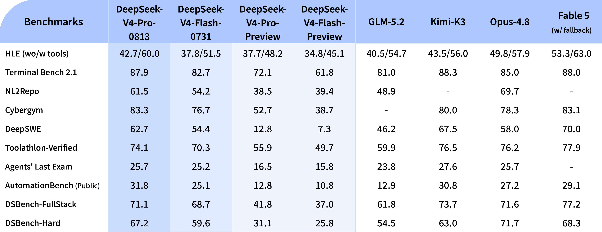

DeepSeek-V4-Pro-0813

它与四月 Pro Preview 的关系
| 维度 | Pro Preview | Pro-0813 |
|---|---|---|
| 发布时间 | 2026-04-24 | 2026-08-13 |
| 身份 | 论文与首发预览 checkpoint | 正式 checkpoint，supersede Preview |
| 主体架构 | 1.6T / 49B activated，1M context | 继承 Pro Preview 结构 |
| 重点 | 架构、预训练、统一 reasoning/agent 能力 | 生产环境 agent 与 coding 大幅增强 |
| DSpark | 独立发行物 | speculative module 随 checkpoint 提供 |
| Reasoning | Non-think / High / Max | low / high / max 明确暴露 |
这次提升到底有多大
| Benchmark | Pro-0813 | Pro Preview | Flash-0731 | 0813 相对 Pro Preview |
|---|---|---|---|---|
| HLE（无 / 有工具） | 42.7 / 60.0 | 37.7 / 48.2 | 37.8 / 51.5 | +5.0 / +11.8 |
| Terminal Bench 2.1 | 87.9 | 72.1 | 82.7 | +15.8 |
| NL2Repo | 61.5 | 38.5 | 54.2 | +23.0 |
| Cybergym | 83.3 | 52.7 | 76.7 | +30.6 |
| DeepSWE | 62.7 | 12.8 | 54.4 | +49.9 |
| Toolathlon-Verified | 74.1 | 55.9 | 70.3 | +18.2 |
| Agents' Last Exam | 25.7 | 16.5 | 25.2 | +9.2 |
| AutomationBench Public | 31.8 | 12.8 | 25.1 | +19.0 |
| DSBench-FullStack | 71.1 | 41.8 | 68.7 | +29.3 |
| DSBench-Hard | 67.2 | 31.1 | 59.6 | +36.1 |
最有辨识度的是 DeepSWE：同为 Pro 架构，12.8 提升到 62.7。即使考虑 harness 或采样口径，这也说明 Preview 与正式版不能被当成同一能力点。HLE 加工具提升 11.8，也表明 0813 不只是在 coding 数据上做局部拟合。
“生产环境增强”应怎样理解
官方原话强调 performance improvements especially pronounced in production environments，但没有给 production distribution 的定义。可以从结果看到三类变化：
- repo-level coding：NL2Repo、DeepSWE、DSBench；
- 终端与安全环境：Terminal Bench、Cybergym；
- 多工具与自动化：Toolathlon、AutomationBench、Agents' Last Exam。
这支持“更长、更脏、更依赖工具状态的任务得到强化”，但不能进一步声称用了哪类真实用户日志或具体在线 RL。训练数据来源和隐私处理均未披露。
0813 在 frontier 中的位置
官方对照中，Terminal Bench 87.9 高于 Opus-4.8 的 85.0，Cybergym 83.3 也高于表中 Opus 78.3；DeepSWE 62.7 高于 58.0。另一方面，NL2Repo 61.5 低于 69.7，DSBench-Hard 67.2 低于 71.7，Toolathlon 74.1 也略低于 76.2。
因此合理结论是：Pro-0813 已在多个 coding/agent 任务达到或超过同期强闭源模型的官方对照水平，但不是全面占优。 跨厂商结果依赖各自 harness；更可信的是同一官方表内 Pro Preview → 0813 的纵向变化。
内置 DSpark 的工程含义
0813 的 speculative module 与 target checkpoint 一起发布。vLLM 示例在 4×GB300 单节点上启用 expert parallel、FP8 KV cache 与 DSpark：
bashvllm serve deepseek-ai/DeepSeek-V4-Pro-0813 \ --trust-remote-code --kv-cache-dtype fp8 --block-size 256 \ --data-parallel-size 4 --enable-expert-parallel \ --moe-backend deep_gemm_mega_moe \ --attention-config '{"use_fp4_indexer_cache": true}' \ --speculative-config '{"method":"dspark","num_speculative_tokens":7,"draft_sample_method":"greedy"}'
SGLang 用 --speculative-algorithm DSPARK，无需单独 draft path。DSpark 改变的是 decode 路径，不是知识或 agent checkpoint 身份；Atlas 因此把独立 DSpark 包放在支线，而把 0813 放在主线。
Reasoning 与生成设置
reasoning_effort 有 low/high/max 三档。Agent 场景推荐 temperature=1.0, top_p=0.95，其他任务可用 top_p=1.0；High / Max 推荐 max output 384K。官方仓库仍采用专用 encoding 代码而不是 Jinja chat template。
使用时应同时记录 effort、实际 reasoning tokens、工具次数与停止原因。只写“Max”而不记录 token ceiling，会把 test-time compute 差异误当模型差异。
哪些结论不能从官方资料推出
- 不能确定 0813 是否继续使用与四月报告完全相同的 GRPO 与 on-policy distillation 配方。
- 不能确定 agent 增益来自更多数据、更好环境、更强 verifier、训练时长还是多者组合。
- 不能根据
production environments推断使用了任何特定产品日志。 - 不能把 DSpark 的速度收益当成 checkpoint 的能力提升。
- 不能把内部 DSBench 当作可独立复现的公共证据。
对 Agent Training 的启发
可以验证：
- 0813 的优势是否集中在首次策略选择，还是来自失败后的 recovery。
- Pro-0813 与 Flash-0731 的能力差距，是否大于它们的成本与吞吐差距。
- High → Max 在长程任务上的 marginal gain 是否值得额外 rollout token。
- 内置 DSpark 在超长 reasoning 下是否保持稳定接受率，是否改变尾延迟。
一手资料
- 官方 Hugging Face model card
- 本地 HF model card
- 官方正式版发布页
- V4 technical report 源码（家族架构）
- Pro Preview 精读
- V4 family 总览
待补证据
- [ ] 等官方披露 0813 的训练增量与消融。
- [ ] 用统一 harness 比较 Preview / 0731 / 0813。
- [ ] 在公开硬件上复测 DSpark 吞吐、接受率和长输出稳定性。